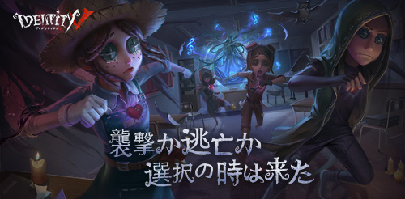
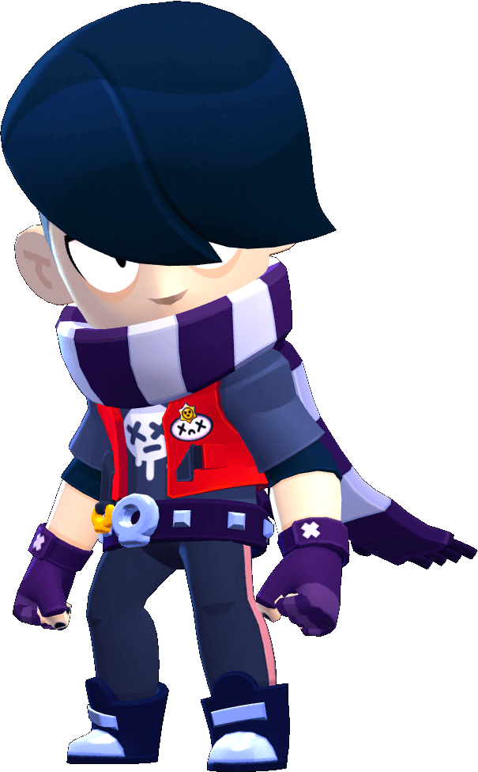

Video Games
Gaming is one of the ways I relax and sharpen my strategic thinking.
Identity V
Identity V is a tense multiplayer game with asymmetric gameplay. One player becomes the hunter while four survivors try to decode machines and escape, and I enjoy the suspense and quick decision-making it requires.

Brawl Stars
Brawl Stars is a fast-paced team battle game with colorful characters and modes. I like coordinating with teammates, using different brawlers, and reacting quickly to win matches.

Why I Play
These games help me practice strategy, timing, and teamwork, which also supports my problem-solving skills in robotics and school projects.